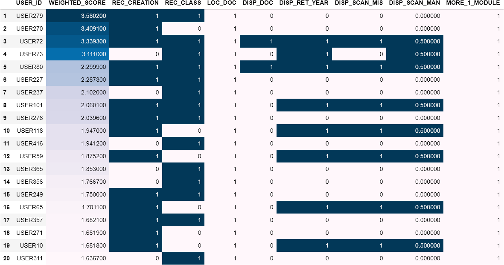

Users with Errors in more than One Module
The is the list of users making erroneous transactions in more than one module and the area in which they make the errors. The list has been sorted based on the weighted score of the users. These users can have a significant adverse impact on the system and hence need to be trained on urgently.
Column names and description:
- USER_ID: ID of the user making erroneous transactions.
- WEIGHTED_SCORE: Weighted score of a user.
- REC_CREATION: how an asset was received into the system - 0 indicates purchase request through the system, 1 indicates manual entry. REC_CLASS: FAP classification – 0 indicates correct classification, 1 indicates incorrect classification.
- LOC_DOC: Location movement document – 0 indicates valid system entry, 1 indicates invalid entry.
- DISP_DOC: Disposal document – 0 indicates valid document present, 1 indicates it is absent.
- DISP_RET_YR: Disposal retirement year – 0 indicates correct entry, 1 indicates incorrect entry.
- DISP_SCAN_MIS: Scan type while disposing of an asset – 0 indicates scanned, 1 indicates missing.
- DISP_SCAN_MAN: Scan type while disposing of an asset – 0 indicates scanned, 0.5 indicates manual.
- MORE_1_MODULE: Error in more than one module – 0 indicates no, 1 indicates yes.
List showing errors for Users with errors in more than one module
Bar chart for Users with errors in more than one module